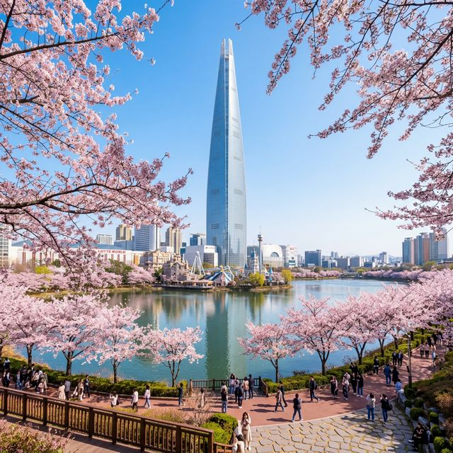
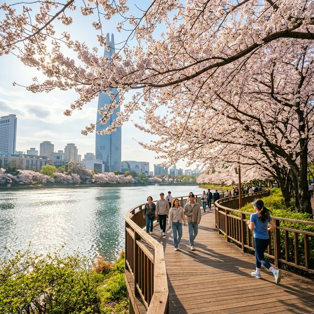
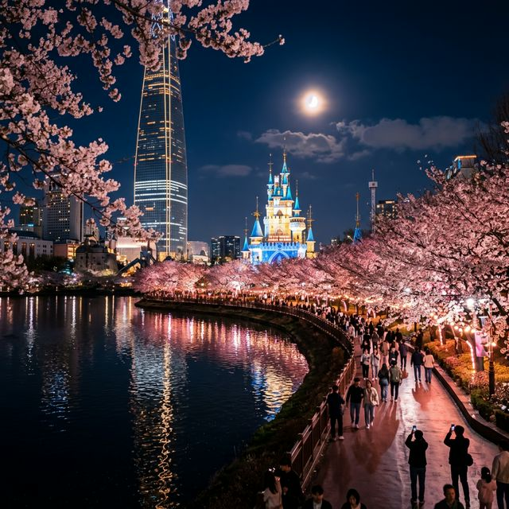

올해 축제는 작년보다 벚꽃 개화가 소폭 빨라질 것으로 예상되어 준비 기간부터 열기가 뜨겁습니다. 공식 축제 명칭은 '2026 송파 호수벚꽃축제'로, 총 2.5km에 달하는 석촌호수 둘레길 전체가 거대한 꽃의 요새로 변신합니다.
특히 3월 28일 오늘부터는 야간 경관 조명이 시범 가동되어, 축제 본 기간 전에 방문하시는 분들도 충분히 낭만적인 밤 산책을 즐길 수 있습니다. 이번 축제의 메인 테마는 '그대와 함께하는 봄의 노래'로, 곳곳에서 버스킹 공연과 미디어 체험을 할 수 있는 것이 특징입니다.
"지금 가면 꽃이 얼마나 피었을까?" 궁금해하는 분들을 위해 송파구가 야심 차게 준비한 서비스입니다. 3월 27일부터 운영 중인 이 서비스는 매일 주요 스팟의 사진과 영상을 5단계 개화 지수로 보여줍니다.
오늘(3/28) 실시간 상황은? 현재 약 2단계인 '개화 시작' 단계입니다. 나무 위쪽 가지부터 팝콘 같은 꽃들이 하나둘씩 보이기 시작했으며, 낮 기온 상승으로 인해 내일부터는 급격히 꽃무리가 형성될 것으로 보입니다. 축제 공식 날짜인 4월 3일 즈음에는 완벽한 만개 상태를 볼 수 있을 것으로 예측됩니다.

석촌호수는 크게 두 개의 호수로 나뉩니다. 각 호수마다 매력이 다른데요. 동호는 롯데월드타워를 배경으로 세련된 도시미를 담기에 최적입니다. 특히 잠실역 2번 출구에서 내려오자마자 보이는 탁 트인 뷰는 누구나 인정하는 최고의 명당입니다.
반면 서호는 롯데월드 매직아일랜드의 동화 같은 성(Castle)과 어우러져 로맨틱한 분위기를 자아냅니다. 연인과 함께 방문한다면 서호 방면의 벚꽃 터널을 따라 걷는 것을 추천합니다. 서호 쪽 카페 거리와 인접해 있어 걷다가 지치면 바로 휴식을 취하기에도 좋기 때문입니다.
올해 새롭게 도입된 더 스피어는 호수교 갤러리 인근에 설치된 구 형태의 거대 미디어 조형물입니다. 32m에 달하는 초대형 화면을 통해 벚꽃이 피어나는 과정부터 석촌호수의 역사를 미디어 아트로 보여줍니다. 특히 야간에는 레이저 쇼와 결합하여 물 위를 비추는 화려한 영상미를 선사할 예정입니다.
| 날짜 | 행사 내용 | 장소 |
|---|---|---|
| 4/3(금) 18:00 | 개막 선포식 및 축하 공연 (하이라이트) | 동호 수변무대 |
| 4/3~4/11 | 벚꽃 야간 점등 (Sunset ~ 22:00) | 호수 전 구간 |
| 4/4, 4/5 | 버스킹 및 마술 쇼 (주말 집중) | 서호 수변무대 |
| 4/11(토) 19:00 | 피날레 불꽃 드론 쇼 | 석촌호수 상공 |

산책을 마친 뒤 맛있는 커피 한 잔, 빠질 수 없죠? 석촌호수 동호 뒤쪽에 위치한 **송리단길**은 이미 전국적인 핫플레이스입니다.
주말에 차를 가지고 잠실에 오겠다는 생각은 과감히 버리시는 게 정신 건강에 좋습니다. 주차 공간도 부족할뿐더러 주차비도 만만치 않습니다. 지하철 잠실역(2, 8호선) 또는 석촌역(8, 9호선)을 이용하면 호수와 바로 연결됩니다.
만약 꼭 차를 이용해야 한다면 가까운 공영 주차장보다는 **롯데월드타워나 잠실역 지하 공영주차장**을 미리 예약하고 오시는 것이 그나마 나은 선택입니다. 주변 백화점 휴점일도 미리 체크하세요!
오전 9시 이전 혹은 밤 9시 이후가 가장 쾌적합니다. 특히 평일 아침은 사진 찍기에 최고의 환경이죠.
벚꽃의 분홍빛을 살려주는 필터가 있는 카메라 앱을 사용해 보세요. 흐린 날씨에도 맑은 느낌을 낼 수 있습니다.
석촌호수 산책로는 협소하여 돗자리 설치가 금지된 구역이 많습니다. 인근 공원을 이용해 주세요.
바쁜 일상 속에서 잠시 숨을 고를 수 있는 봄날의 여유. 석촌호수를 가득 채운 벚꽃들과 함께라면 그 이상의 힐링도 없을 것 같습니다. 이번 주말 사전 답사를 시작으로 공식 축제 기간까지, 여러분의 봄이 석촌호수처럼 화사하게 피어나길 응원하겠습니다.